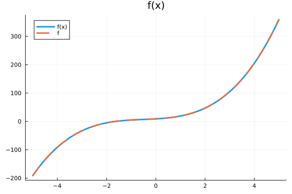
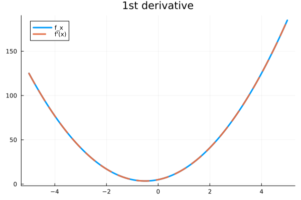
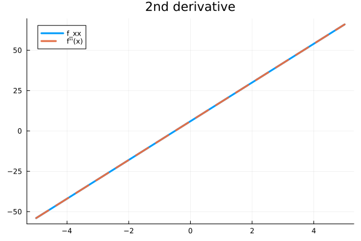
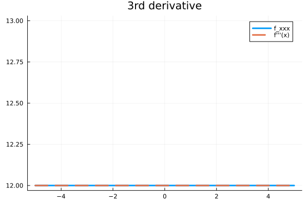

Introduction to Reverse Mode Automatic Differentiation on Scalars
Problem Statement
Differentiate $f(x)=2x^3 + 3x^2 + 5x + 9$ automatically for $x \in [-5, 5]$.
Solution
Import jac library.
using jacNext step is to define the above mentioned cubic polynomial as a function.
f(x::Tensor) = 2*x^3 + 3*x^2 + 5*x + 9Forward pass (or computation graph generation) is just about executing the function in desired range of $x$ values and gradient at that point can be computed simultaneously using autograd.
# Define range
X = range(-5, 5, 100)
# Empty lists to store value and gradients at each x value
Y = [] # Evaluations
dY_dX = [] # 1st order derivative
d2Y_dX2 = [] # 2nd order derivative
d3Y_dX3 = [] # 3rd order derivative
# Looping over each x value
for x_val in X
# Converting point to Tensor
x = Tensor(x_val)
# Evaluating the function
y = f(x)
append!(Y, y.val)
# 1st order derivative
dy_dx = autograd(y)[x]
append!(dY_dX, dy_dx.val)
# 2nd order derivative
d2y_dx2 = autograd(dy_dx)[x]
append!(d2Y_dX2, d2y_dx2.val)
# 3rd order derivative
d3y_dx3 = autograd(d2y_dx2)[x]
append!(d3Y_dX3, d3y_dx3.val)
endNow I have everything I need. To verify the results I'll plot them against analytical solutions.
# f(x)
f(x) = 2*x.^3 .+ 3*x.^2 .+ 5*x .+ 9
# 1st order analytical derivative
f_x(x) = 6*x.^2 .+ 6*x .+ 5
# 2nd order analytical derivative
f_xx(x) = 12*x .+ 6
# 3rd order analytical derivative
f_xxx(x) = ones(size(x)) .* 12using Plots\[f(x)\]
plotted:
# f(x) plotted
plot([X, X], [f(X), Y], label=["f(x)" "f"], linewidth=3, ls=[:solid :dash], title="f(x)")
\[f'(x)\]
plotted:
# f'(x) plotted
plot([X, X], [f_x(X), dY_dX], label=["f_x" "f'(x)"], linewidth=[3 3], ls=[:solid :dash], title="1st derivative")
\[f''(x)\]
plotted:
# f''(x) plotted
plot([X, X], [f_xx(X), d2Y_dX2], label=["f_xx" "f''(x)"], linewidth=[3 3], ls=[:solid :dash], title="2nd derivative")
\[f'''(x)\]
plotted:
# f'''(x) plotted
plot([X, X], [f_xxx(X), d3Y_dX3], label=["f_xxx" "f'''(x)"], linewidth=[3 3], ls=[:solid :dash], title="3rd derivative")